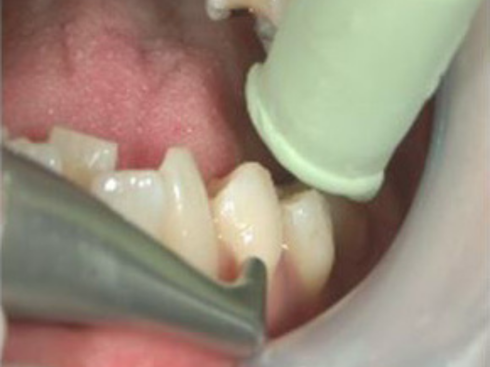
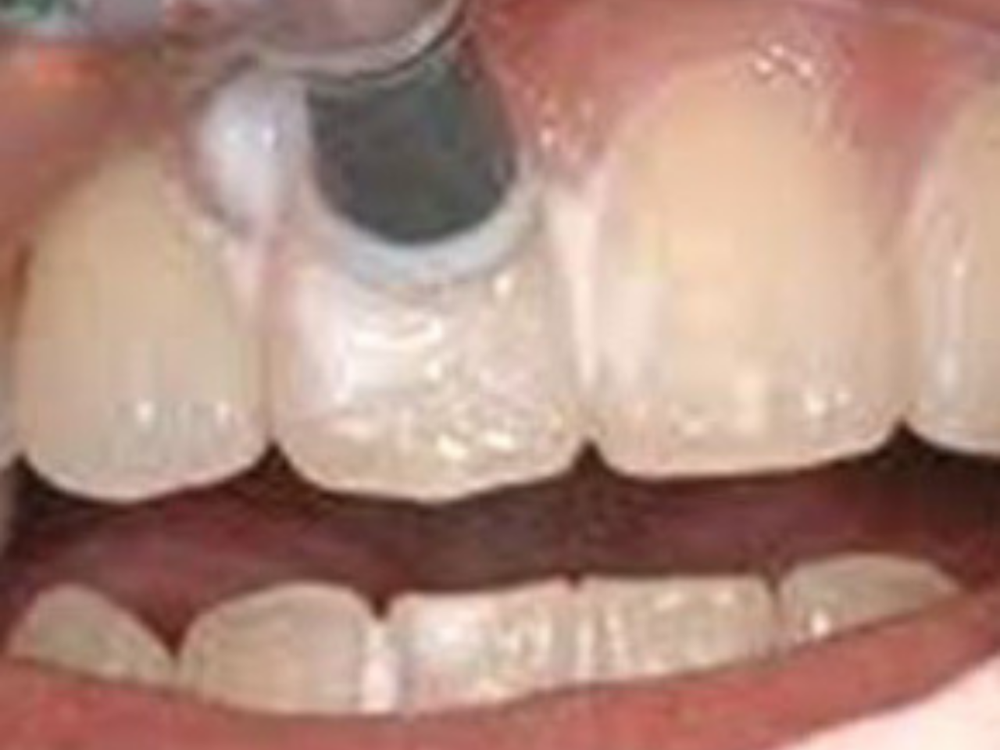
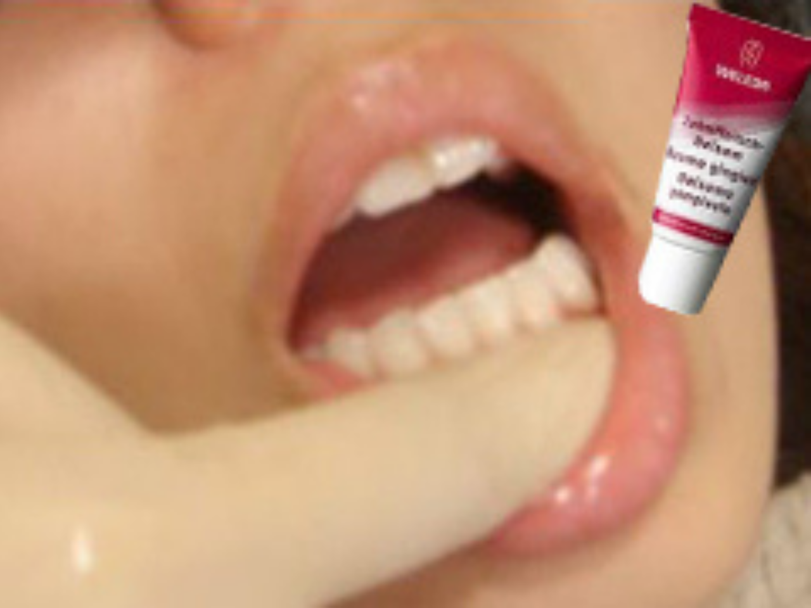

エアフロー
高圧エアーで着色・プラーク、歯のぬめり（バイオフィルム）を除去します。

年単位でお口の健康を守るＮＴ会員は、あなたのライフスタイルにあわせ、
年４回から１２回まで来院間隔を選べる他、ご家族にはお得なファミリー会員、
もっと自分のお口を詳細に知りたい方に向けた『精密会員』などのシリーズから選べます。
もちろん、とりあえずお試しという方にも１回だけのコースもありますから、ご安心ください。
会員となったお客様は特別料金でお口のメンテナンスを中心としたクリーニングやデンタルエステをお受けいただけるほか、さまざまな特典がございます。
※当院でインプラントを埋入された患者様、および矯正治療に入られる患者様の入会は必須としています。
はじめに「お口の健康レベル」を多角的に検査します。これにより、あなたに必要な予防方法が明確になります。また院長による「かみ合わせ診断」で、あなたが普段から感じている「お口の違和感」の原因が判明したケースもあります。

歯の歯石は歯ぐきの奥の見えないところにも付着しています。この見えない歯石を放置することで、歯を失うリスクが高まります。NT会員では、毎回のケアで確実に健康な歯と歯ぐきに育てます。 またPMTCにより、歯のヌメリも、確実に落とすので、歯の表面は舌で触るとツルツルな状態になります。これにより汚れが付着しにくい歯になります。

リラックスした状態で、唾液の分泌促進やフェイスラインのリフトアップに効果が期待できるマッサージを体験できます。気持ち良く目覚めた後に感じる「スッキリ感」を楽しみにしている方も多い施術です。

あなた専任の担当衛生士がいますので、
「毎回同じことを説明しなければならない」
という煩わしさがなく、安心して予防を受けることができます。また、あなたに最適なご自宅でのケア方法もご提案いたします。

自費のメインテナンスとなりますので、必要に応じて早急に治療も行います。
これにより、お口の問題が大きくなる前に健康な状態を取り戻せます。


高圧エアーで着色・プラーク、歯のぬめり（バイオフィルム）を除去します。

茶渋、ヤニ、歯石、歯垢、歯のぬめり（バイオフィルム）を落とし、ツルピカに磨きます。

音波振動を利用した小ブラシでの清掃で、歯質や被せものを傷つけずにバイオフィルムを除去します。

歯の表面を傷つけずエナメル質と同じ成分でなめらかにトリートメント！ナノ粒子レベルの薬用ハイドロキシアパタイトを塗布します。以下の効果が望めます。
① 歯のエナメル質修復効果・再石灰化
・歯表面の微小欠損の充てん
② 歯垢の吸着除去効果

① 唾液腺・歯ぐきのマッサージ
唾液の分泌促進により歯周病、免疫力、口臭改善効果が期待できます。
② 咀嚼筋・表情筋のマッサージ
老廃物を流し血液循環が良くなることで顔のこりやむくみを改善し、フェイスラインのリフトアップ効果が期待できます。
「メインテナンスをする」という事で目的は同じです。
しかし、そこに至るまでの手法に最新の予防技術と、安全の管理体制を導入した点が大きく異なります。一生、自分の足で自由な場所へ行きたいと思う事と同じく、生涯好きな食べ物を自分の意思で食べ続ける事は、人生を豊かに過ごす為には必要な事と考えます。
日本人は世界でも長寿な民族です。しかし８５歳を過ぎると、約半分の方が人の手を借りる必要がある状態になります。お口が健康である事が、長寿の秘訣である事は多くの研究から明らかになっています。８５歳になった時、健康でいられるか否かは【自分で選べる時代】です。『そんなに長生きしないから大丈夫？』…日本人の平均寿命はすでに、男性８０歳、女性８６歳です。


私が学生時代に感じた「おどろき」が全てのはじまりでした。医療とは関係のない家庭環境で育ったためなのか、それとも昔の私の行いが悪かったからなのか…私の口の中は、銀歯でいっぱいでした。
しかし大学で出会う親御さんが歯科医師の同級生の口の中には銀歯が一本もなかったのです！
やはり大切なことは「むし歯を治すこと」よりも、できるだけ「むし歯にならないこと」または「再度治療になる可能性をできるだけ減らすこと」であると学びました。そこで予防で有名な熊谷先生の講演を聞いて、保険で出来る予防行為の限界を知り、予防方法に限界のない自費のシステムを取り入れたのです。これが私が「NT会員制度」をスタートさせた理由です。